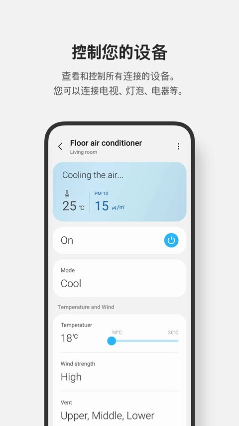

SmartThings 上手两周：从一脸懵到全屋自动的真实体验
作为一个对智能家居只停留在"小爱同学关灯"水平的新手，我抱着试试看的心态装了 SmartThings。两周之后，我家的灯、空调、门锁、冰箱都开始自己动了。这篇是我踩过坑、尝过甜头之后的真实感受。
说实话，之前我对"全屋智能"这四个字是有点抵触的。总觉得那是极客玩家才玩得转的东西，需要蹲论坛刷教程、写代码、折腾各种协议，普通人碰了就是给自己找罪受。
但上个月家里换了台三星的 Family Hub 冰箱，配送师傅随口说了句"装个 SmartThings 手机上就能看冰箱温度"。我随手搜了一下，发现它的官网做得挺干净——没什么花里胡哨的营销，就是告诉你能接多少设备、能做多少自动化。抱着"反正免费，装一下试试"的心态，我从SmartThings下载拿了 App 装上了。
这一下就收不住了。
第一眼：App 比我想象的简单
打开 SmartThings 的主界面，我的第一反应是：这居然不是一堆乱七八糟的卡片堆在那儿。顶部是你家的平面图（我用的是默认布局，还没仔细调），下面分了几个 Tab：Favorites（收藏夹，你常用的设备放这儿）、Devices（所有设备）、Rooms（按房间分组）、Routines（自动化场景）。

我最先加的设备是那台 Family Hub 冰箱——因为它自己就是三星的，配对完全不用我操心，App 自动检测到它就在同一个 Wi-Fi 里，点一下就连上了。然后加了几个家里已有的设备：Aqara 的门窗传感器（装的时候才发现，SmartThings 原生支持 Matter 协议，直接扫 Matter 二维码就配对了，比我以前用小米网关还省心）、Philips Hue 的几盏灯、一台老的美的空调（这个有点麻烦，走的是桥接方式，要先在美的 App 里授权）。
前后不到十分钟，六个设备全部在 App 里亮起来了。说实话，这比我预期的快太多——我做好了蹲半小时教程的准备。
用了两周，三个地方让我觉得值
最惊喜的是 Routines，不是摆设
最开始我以为自动化场景就是个花架子——"定时开灯"谁不会啊，我用智能灯自带的定时功能就能搞。但真正玩了 Routines 之后才发现，它的 IF-THEN 逻辑比我想的灵活太多。
我设的第一个 Routine 是"回家自动亮灯"：IF 手机 GPS 检测到我到家了（Geofencing），THEN 开玄关灯 + 开客厅空调。就这么一条规则，每天下班进家门的瞬间，玄关灯"啪"地亮起来，空调已经提前在吹冷风了——说实话，每次都有那么一瞬间觉得自己活在科幻片里。
但这里有个我踩过的坑：Geofencing 默认的位置权限是"只在使用时允许"，这样你离开 App 之后 SmartThings 就拿不到 GPS 数据了，自动化完全不触发。我头一天晚上没注意这个设置，到家了灯没亮，还以为是 SmartThings 坏了。后来翻设置改成"始终允许"，又把精确位置打开，这才正常。而且 Geofence 半径默认是 150 米，我家小区楼挺密，GPS 经常飘，调大到 300 米之后就没怎么误触发了。

现在我家有五个常驻的 Routine：回家开灯、离家关灯、晚上十点自动锁门+关灯+空调调睡眠档、冰箱门没关两分钟推通知、早上六点半主卧灯慢慢亮起来当闹钟。这些全是在 App 里点出来的，不用写一行代码。
设备控制统一了，不再切来切去
之前我控制家里的设备，要在三四个 App 之间来回切：空调用美的美居、灯用 Philips Hue、门锁用 Aqara Home、冰箱……其实冰箱我之前几乎没在手机上看过。现在所有设备全在 SmartThings 里，一个界面搞定。
而且它做得挺细——调节 Hue 灯的亮度是实时滑块，不是点按钮跳档；空调能直接设具体温度和模式；门窗传感器的状态（开/关）能一眼看到。对我这种懒癌来说，这一个统一入口就已经值回票价了。
Home Insight 那个 AI 还真不是噱头
SmartThings 有个后台叫 Home Insight，官方说法是"AI 洞察引擎"，我一开始以为就是个统计面板之类的东西。但用了一段时间之后，它干了几件让我意外的事：
有一天我发现它提醒我"冰箱温度异常，请检查门封"。我去看了一眼，确实是冰箱门没关严——可能是我前一天放蛋糕进去的时候带出来了一点东西卡着。还有一次它说"Hub 信号弱，建议挪到更开阔的位置"，我把 Hub 从电视柜后面挪到客厅中间的茶几上，之后门窗传感器的响应速度明显快了。
它还根据我的设备和习惯，主动给我推荐 Routines。比如它发现我有三星洗衣机，就推荐了"洗衣机完成后 Family Hub 屏幕推送通知"——这个我之前完全没想到，现在真的用上了，不用再跑到阳台去看洗衣机有没有洗完。
但也有几个不爽的地方
生态虽然大，但不是万能的。我家那台老美的空调走的是云桥接，有一次美的那边服务器抽风，SmartThings 就控制不了它了，得等美的恢复。桥接的延迟也比直连的 Matter 设备明显，点一下开关，灯是立刻亮的，但空调可能要等个两三秒。
还有，SmartThings 的服务器在国外，国内访问偶尔会慢一下——不是经常，但有时候打开 App 要加载个三五秒。后来去SmartThings文档翻了一下才弄明白，这是很多国内用户都反馈过的问题，暂时没什么特别好的解决办法。
以及，Home Insight 的部分功能在国内是受限的。节能建议那一块，AI Energy Mode 这些，官方说目前主要在韩国和美国可用。我这边用不了全部，但至少设备健康提醒和 Routines 推荐是正常的。
适合谁，不适合谁
如果你跟我之前一样，觉得"全屋智能太折腾"，那 SmartThings 可能真的可以试试看。它的核心优势就是：配对简单（尤其是 Matter 设备扫个码就行）、Routines 不用写代码、生态够大（380+ 品牌、4500+ 设备，基本主流品牌都覆盖了），新手也能在半小时内搭出一个能用起来的自动化雏形。
如果你是那种想玩自定义协议、写复杂规则、追求极致自由度的硬核玩家，那 SmartThings 可能不够"折腾"——它的 IF-THEN 逻辑虽然灵活，但毕竟是图形化的，跟 Home Assistant 那种想改什么改什么的比起来还是差了点。
还有一点要提醒：Geofencing 要开"始终允许"位置权限，这个会稍微增加一点手机的后台耗电。我 iPhone 上感觉不太明显，但 Android 用户可能要注意一下。
现在我每天回家都会自动亮灯、空调已经调好温度，睡前说一声"Good night"所有灯关掉、门锁自动锁上、空调切到睡眠档。这些东西听起来好像没什么，但真正融入生活之后，你就回不去了。这种"什么都不用我管，它自己就弄好了"的感觉，是我用 SmartThings 之前没想到的。
这套智能家居的完整资料我同步放在三个仓库了，不管你习惯用 GitHub 还是国内访问更稳定的 Gitee、GitCode，都能拿到。后续我还会继续探索更多玩法，到时候再更新。